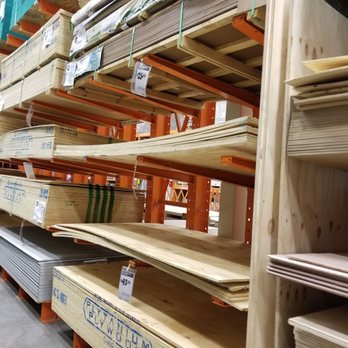

The Mega-Cabinet + Desk
When I started my last summer as a college student, I realized this could be the last time I’d spend a significant amount of time living in my parents’ house. I wanted to help make their soon-to-be empty nest a little more comfortable. This page covers the renovation I did for my mom (my dad’s renovation is under the Japanese-Style Office Renovation).
My mom has always been a bit of a tinkerer (the apple doesn’t fall far from the tree, I know). Like me, she’s always entangled in a multitude of small projects. Over the years, though, after many different projects, the area where she worked—our house’s sunroom—had gotten cluttered to the point where there wasn’t much surface to work on. To be honest it drove me a little crazy: even though it was organized, every type of item had its own unique container that didn’t mesh with the others, so a lot of space was wasted. I proposed building the end-all storage solution: a massive cabinet spanning the large flat wall near the room’s entrance. To my delight, she agreed (which is insane, since that meant eventually re-organizing everything into the new cabinet).


I wanted the cabinet to fit her needs, so during the design process I checked in to make sure every change was okay (I might have done that to the point of pestering, in retrospect). I landed on: large drawers on the bottom for bulk items; smaller drawers on the lower-right for tools and mid-sized items; a cabinet on the left with bins that could attach to the doors for very small items; and shelves to the left and top for large items and bins that didn’t need frequent access. When I was designing the drawers, I had them go up to around 5.5 feet based on my eyeline—until I realized I’m almost a half-foot taller than my mom and ditched the upper layer of drawers.

I was a genius and bought wood from Home Depot. If you’ve ever worked with Home Depot wood, you know I’m being sarcastic. It came back to bite me throughout the whole build: the wood was so warped that it often threw off my measurements and built what could best be described as a giant cabinet-shaped spring held together by nails and screws (I’m exaggerating, but it’s partly true).

Hoo boy, construction was a challenge. In total I needed to build the 7.5′×8′ frame, plus 4 shelves, 8 smaller drawers, 4 mid-sized drawers, 2 large drawers, and the cabinet doors. That was more than 80 different cuts of wood (of varying thickness) to make and assemble. I had to design it to be built in two halves, since it’s literally impossible to fit a 2′×8′×8′ box through any door in the house (or lift it). By the time I started building, summer had rolled around and all my workshop equipment was in the garage. Luckily for me, a heat wave decided to show up right around then—and I have now learned that working while hot is torture.


After around 3 months of work and a coat of paint, it was finished. I was free!


Hah, I fooled you! There was actually a little more to be done. One of the trickiest things about the room is the large curved wall on the outside. It makes the room really pretty and gives a wide view of the woods in the back, but furniture tends to be square—it doesn’t fit along the wall and it blocks the window. So we decided that to use that wall properly, we’d put a large curved desk against it. After the cabinet, this was stupid simple by comparison; I knocked it out in about a day, not another 3 months. Phew!